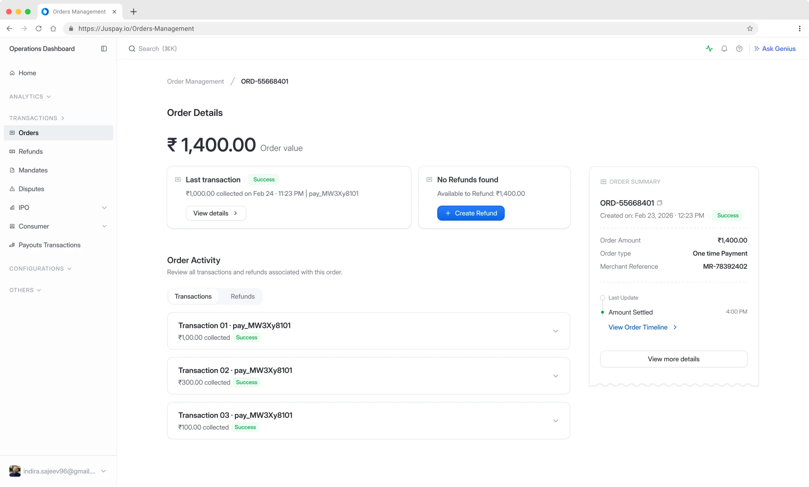
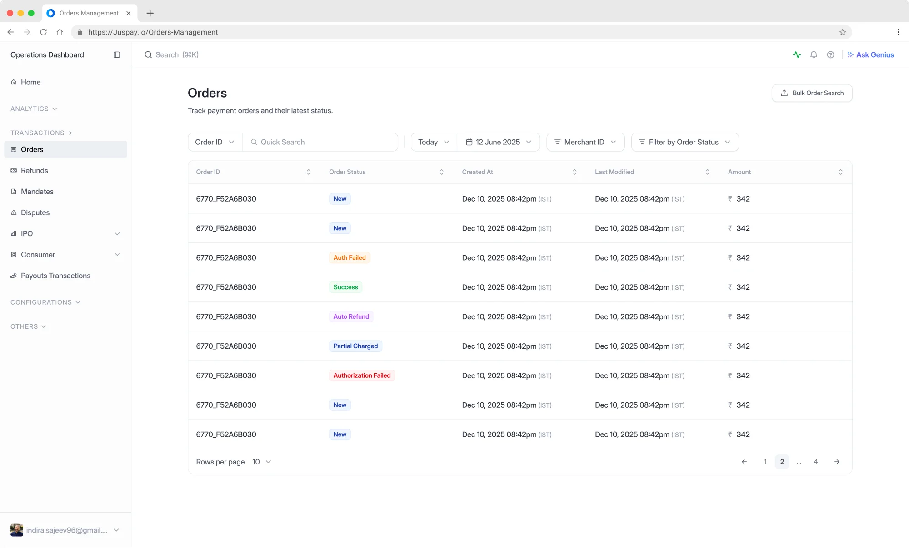
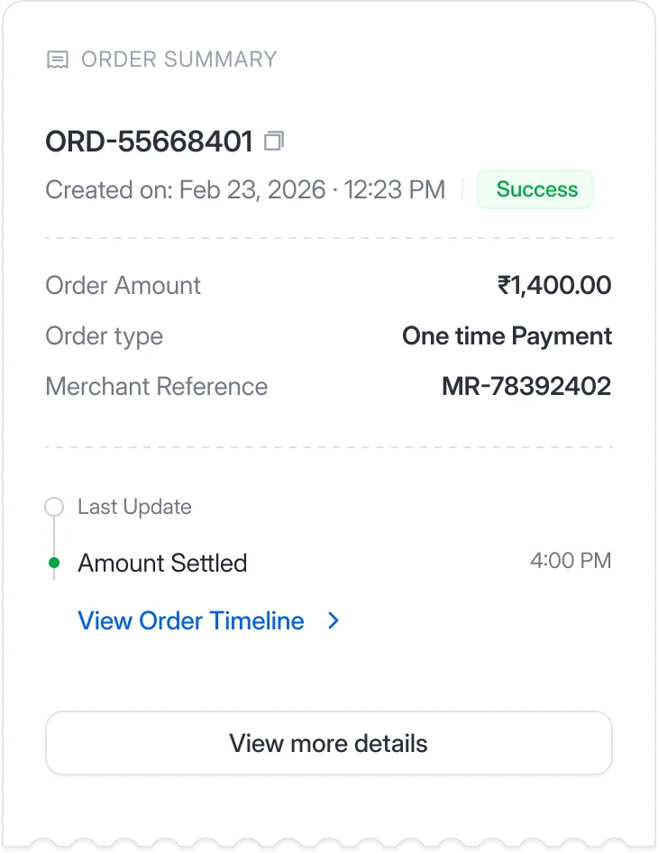
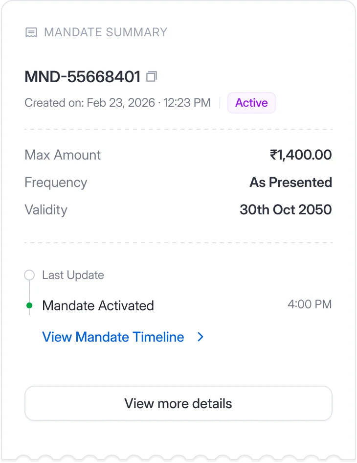
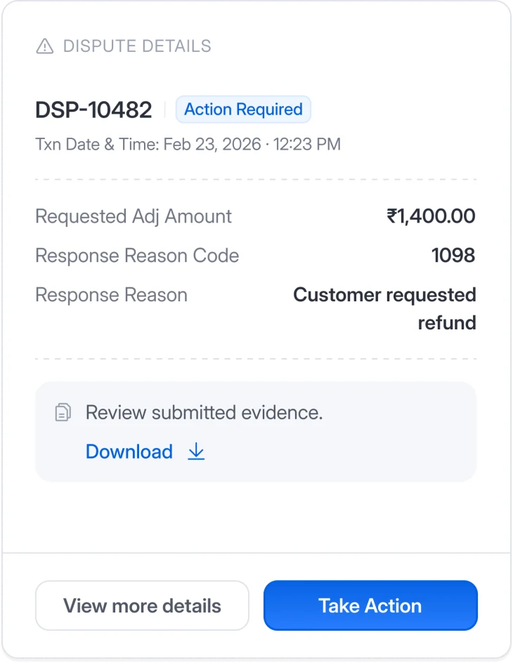
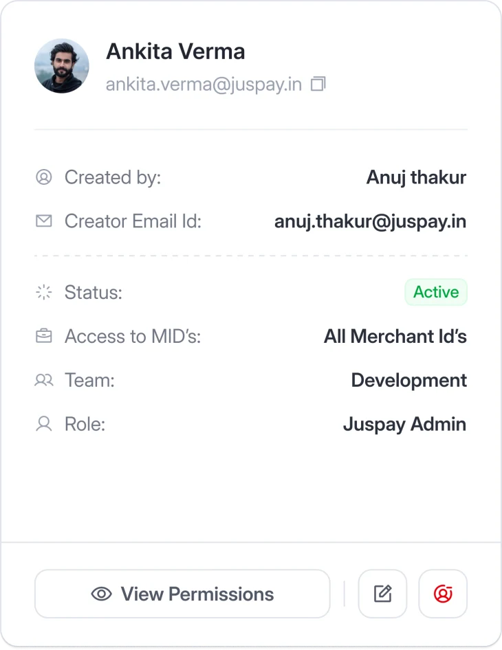
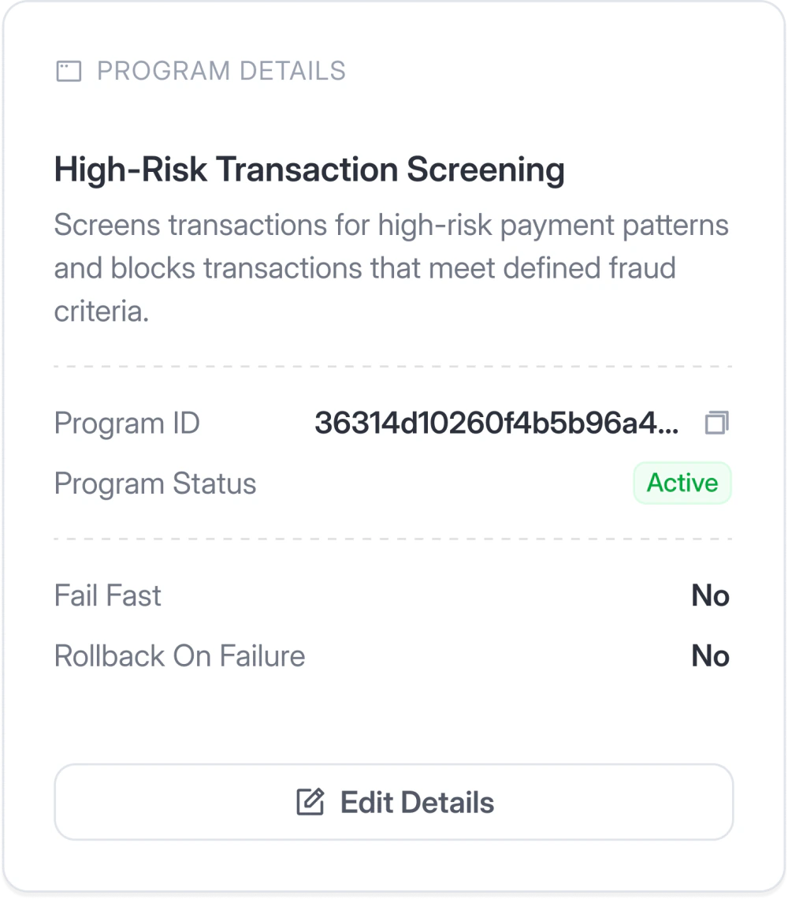
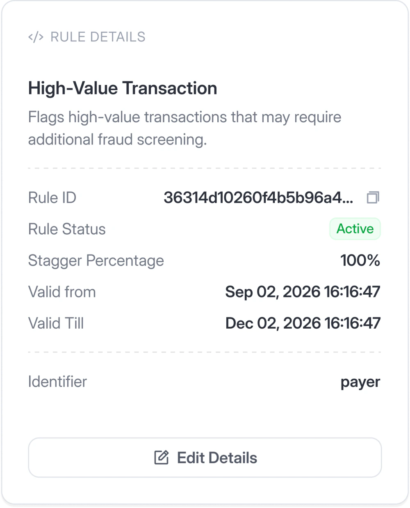

UPI Dashboard
- Solo Product Designer
- Juspay UPI
- 0→1, end to end

Designed Juspay's UPI operations dashboard from scratch as the sole designer, owning the end-to-end product experience across key workflows including order management, refunds, mandates and dispute resolution. Brought these interconnected operations together into a unified experience for merchants, banks and internal teams.
What is the UPI Dashboard?
Juspay powers UPI payments for merchants and banks. The dashboard brings the operational side of these payments into one place, helping teams manage orders, process refunds, track mandates and handle disputes.
It serves three user groups: merchants, banks and Juspay's internal teams. Each uses the dashboard for different operational needs, from managing payments and merchant accounts to monitoring disputes and settlements.
The starting point for payment investigation
Orders is the starting point for understanding a payment. Since each order connects to multiple things like transactions, refunds, settlements and disputes, the challenge was to bring relevant information together in a clear, structured view. Users can quickly understand an order's status, spot potential issues and navigate to the details they need.
Orders

Order details
Refund details
Mandates
Disputes
The essentials, at a glance
Each module contains its own terminology, data and operational details, making it difficult for users to quickly understand a record. To reduce that effort, I introduced a consistent summary card across modules.
Designed to bring the most relevant information — key identifiers, status, important metrics and latest updates — into one glance. This gives users a quick understanding of each record before they dive into the details, while keeping the experience familiar as they move between modules.






User management
Reports
Tickets
Mails
Risk rules
One dashboard where merchants and banks can follow every order from payment to refund, mandate or dispute, built on a small set of patterns that repeat across all 14 modules.